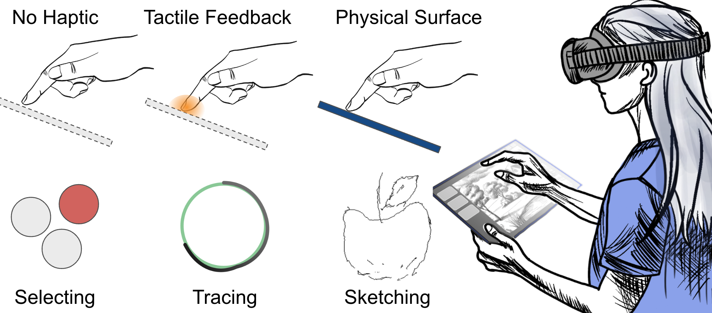
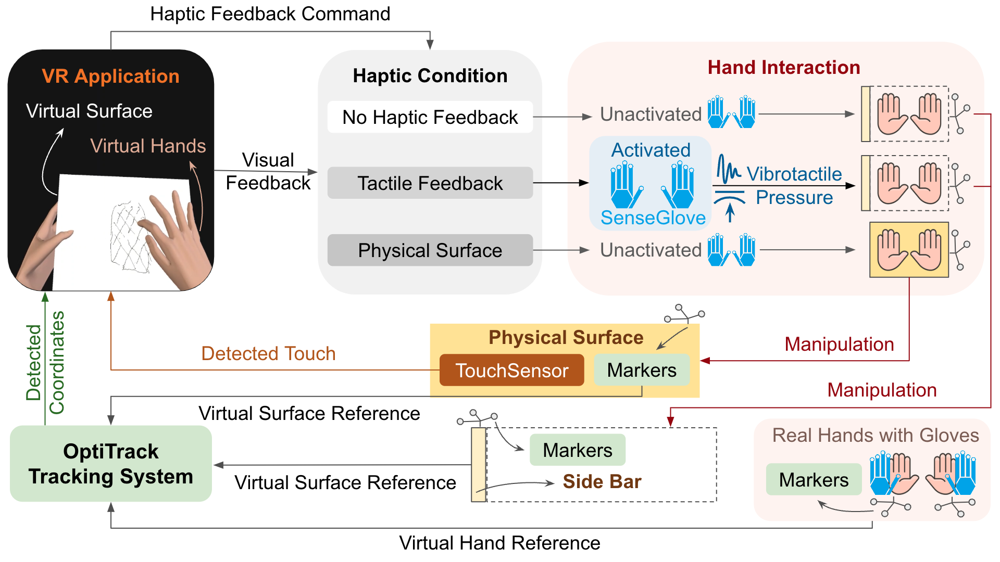
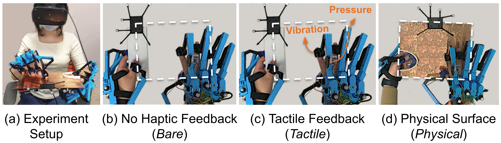
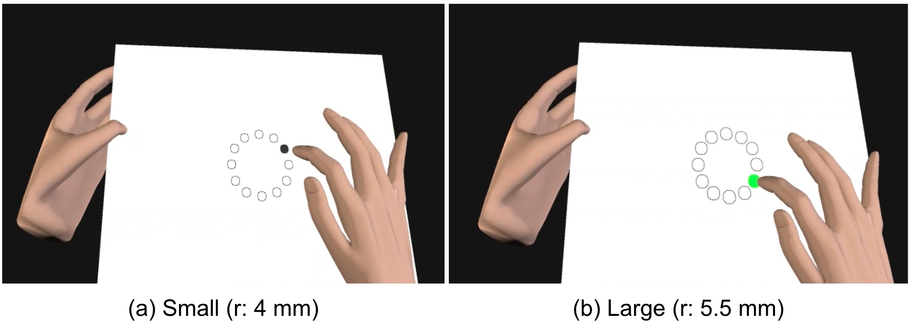
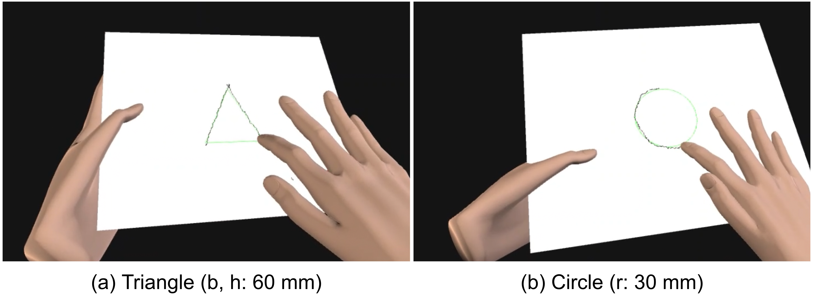
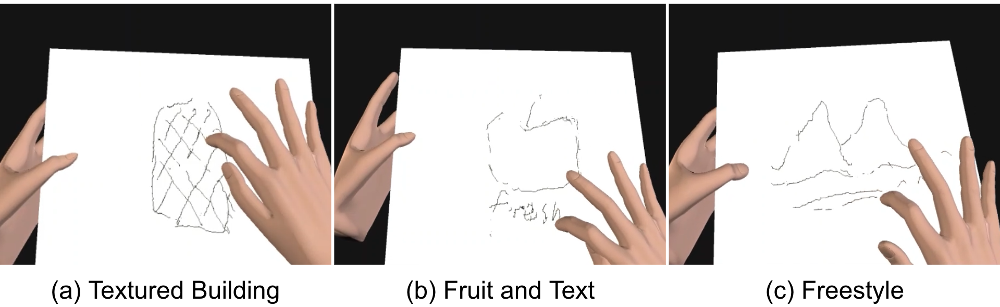
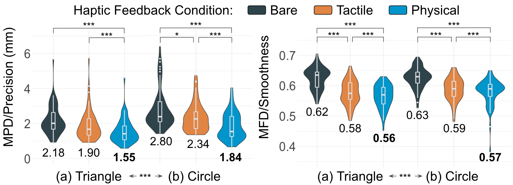
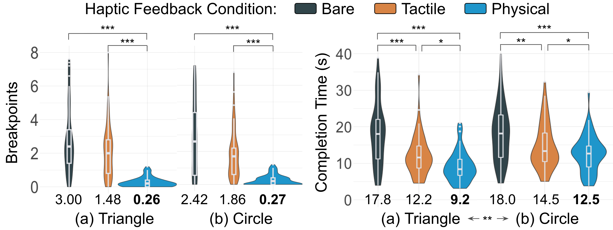
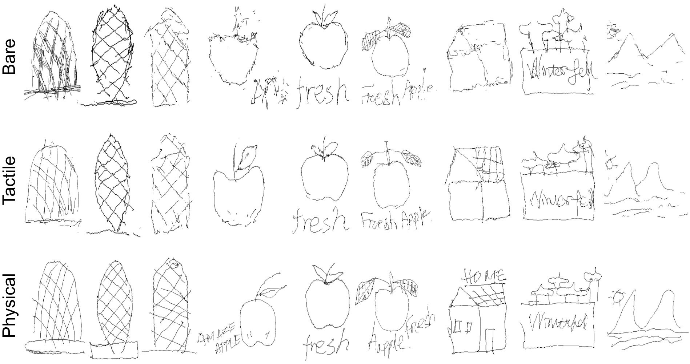
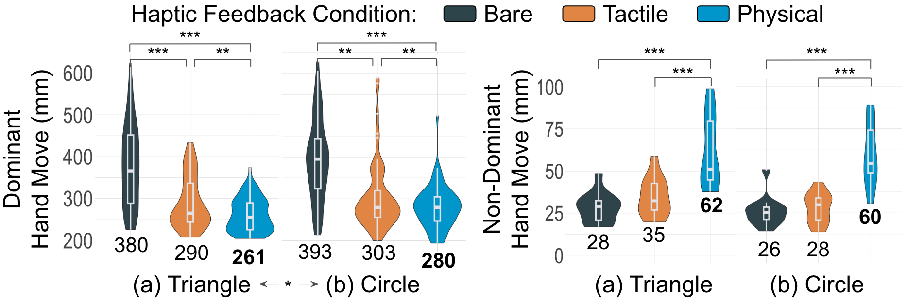

We compare visual-only input, tactile feedback, and a portable physical surface for precise touch tasks in VR.
Abstract
Virtual reality systems can enable convenient hand-based interactions across diverse work scenarios. However, mid-air gestures lack tactile feedback and a physical reference surface to support the hand, which can make precise and efficient touch interaction difficult.
This paper investigates how hand-grounded haptic feedback affects VR tasks that demand high precision, including selecting, tracing, and sketching. We compare three feedback levels: no haptic feedback, tactile feedback through vibrotactile and pressure cues, and interaction with a portable physical surface.
Portable physical surfaces enabled the best selection precision, tracing efficiency, and sketch quality. Participants also used both hands more actively when engaging with a physical surface, matching their preference for the added confidence and control.
Video
Study Overview

The system tracks the hand, handheld surface, and touch dynamics to render precise touch input in VR.

We studied three haptic feedback conditions for touch interaction on a virtual surface:
- Bare: visual feedback only, with no haptic feedback.
- Tactile: vibrotactile and pressure feedback when touching a virtual surface.
- Physical: a 255 x 205 mm handheld acrylic surface with capacitive touch sensing.
Twelve participants completed selecting, tracing, and sketching tasks while wearing an Oculus Rift S and SenseGlove DK1 devices. OptiTrack tracked the hands, surface, and touch dynamics.

Selecting
Fitts' law tasks with small and large targets tested precise discrete touch input.

Tracing
Triangle and circle tracing tested continuous touch control and stroke quality.

Sketching
Building, fruit, and freestyle sketches tested more complex creative input.
Results Highlights

Compared with tactile feedback, the physical surface improved tracing precision by 20.3%, continuity by 86.8%, and speed by 18.3%. The physical surface also improved sketch smoothness by 21.6%, stroke continuity by 21.2%, and sketch clarity by 17.5%.
These benefits were strongest for continuous tasks, where the surface helped users maintain stable contact while moving along the virtual surface.


Bimanual Interaction
Physical surfaces changed how participants used their hands. Participants hovered the dominant finger farther from the surface before contact, moved the dominant hand less during continuous tasks, and moved the non-dominant hand more to adjust the surface.
This suggests that a tangible surface can help both hands share the workload, giving users a more familiar reference frame for precise VR input.

Citation
@article{YING2026103850,
title = {Physical surfaces make touch interactions in virtual reality precise, efficient, and bimanual},
journal = {International Journal of Human-Computer Studies},
volume = {215},
pages = {103850},
year = {2026},
issn = {1071-5819},
doi = {https://doi.org/10.1016/j.ijhcs.2026.103850},
url = {https://www.sciencedirect.com/science/article/pii/S1071581926001254},
author = {Wen Ying and Seongkook Heo},
keywords = {Touch interaction, Portable physical surfaces, Haptic feedback, Virtual reality}
}